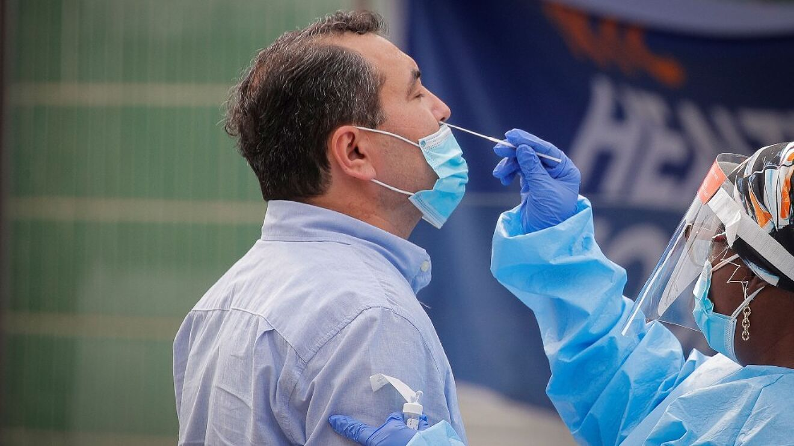

COVID 19
El virus mortal del siglo 21

Ten cuidado
No a la aglomeracion de la gente. Cuida tu vida.

Prueba rapido
No te confies, no lleves el virus a tu casa.
Virus mortal
Lavate las manos si no deseas que se lleve a tu familia.